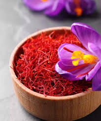

L'Or Rouge de Taliouine
Le safran de Taliouine, un goût qui illumine...

Bienvenue sur notre site dédié au safran de Taliouine, l'un des joyaux les plus précieux du Maroc. Ici, vous trouverez tout ce qu'il faut savoir sur cette épice exceptionnelle : son histoire, ses utilisations et les traditions uniques de la région.
Ce site est conçu pour vous offrir une expérience riche et agréable. Que vous soyez curieux d'en apprendre davantage sur le patrimoine culturel de Taliouine, intéressé par les bienfaits du safran ou à la recherche d'idées de recettes, vous êtes au bon endroit !
Explorez les différentes sections :
- Utilisations et bienfaits : Apprenez comment intégrer le safran dans votre quotidien, que ce soit en cuisine, en cosmétique ou pour votre santé.
- Découvrir Taliouine : Plongez dans la beauté et le patrimoine unique de cette région emblématique.
- À propos : Découvrez l'histoire fascinante du safran et les traditions des cultivateurs locaux.
- Contact : N'hésitez pas à nous écrire pour toute question ou pour partager votre expérience.
Nous espérons que votre visite vous inspirera et vous fera découvrir la richesse du safran de Taliouine. Bonne exploration et merci de soutenir ce trésor culturel unique !